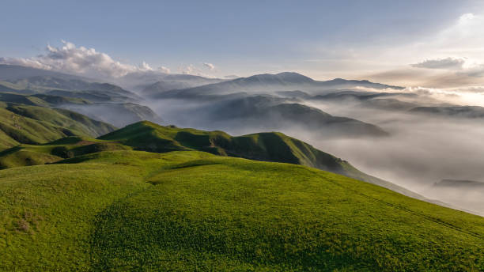
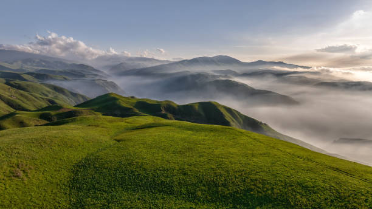
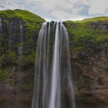
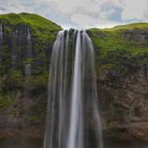
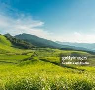
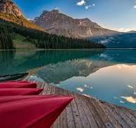
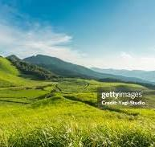
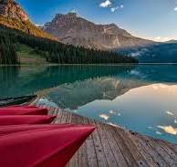

Entremos al Mundo de la Naturaleza
 



La naturaleza es un vasto y diverso ecosistema que alberga innumerables especies de plantas, animales y microorganismos. Cada elemento en la naturaleza está interconectado, creando un delicado equilibrio que debemos preservar. Desde las vastas selvas tropicales hasta los frágiles arrecifes de coral, cada ecosistema es esencial para el mantenimiento del planeta. Conectarse con la naturaleza no solo nos permite disfrutar de su belleza, sino que también nos enseña la importancia de respetarla y cuidarla para las futuras generaciones. Además, la naturaleza actúa como un pulmón vital que filtra el aire, proporciona recursos esenciales y regula el clima global.
Conociendo más sobre la Naturaleza


En esta sección del blog, profundizamos en temas sobre los biomas del mundo, la biodiversidad y cómo la naturaleza impacta en nuestra vida diaria. Exploraremos historias inspiradoras de conservación, investigaciones científicas sobre el cambio climático y consejos prácticos para vivir de manera más sostenible. Cada artículo está diseñado para fomentar una conexión más profunda con nuestro entorno natural y destacar la necesidad urgente de protegerlo. Además, abordaremos cómo la pérdida de biodiversidad afecta directamente a los ecosistemas y a la salud humana, generando un efecto dominó que debemos frenar a través de acciones responsables y conscientes.
Un Recorrido por la Naturaleza
 

 



La galería captura algunos de los paisajes naturales más impresionantes del planeta. Desde las montañas cubiertas de nieve hasta los exuberantes bosques tropicales, cada imagen nos transporta a un rincón único del mundo natural. A través de estas fotografías, buscamos transmitir la esencia y el esplendor de la naturaleza, recordándonos que cada paisaje es un tesoro que debemos preservar. Cada fotografía es un recordatorio visual de los ecosistemas que están en riesgo debido a la deforestación, el cambio climático y la contaminación. La naturaleza habla a través de sus paisajes y depende de nosotros escuchar ese llamado y actuar en consecuencia.
Contacto
¿Tienes alguna consulta o sugerencia? Estamos aquí para escucharte y compartir nuestro amor por la naturaleza.en GitHub GitHub.
¿Quieres aprender más sobre la naturaleza? Visita este diccionario universal sobre la naturaleza para encontrar información detallada y profunda acerca de los ecosistemas, biodiversidad y conservación ambiental.